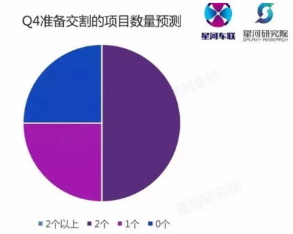

独家丨还在玩命找风口？这份［创投指数］报告，泄露了投资背后的数据逻辑
2017-10-25来源：星河研究院
- 编者按：
-
数据显示，我国共享单车投放已超1000万辆，用户超过1亿人次，而全国机动车保有量早在年初就已突破3亿大关。中国正在赶超美国这个“车轮上的国家”，成为名副其实的交通出行大国。
这背后蕴含的是交通出行行业的大机遇。
汽车交通出行创投指数是星河互联汽车交通出行事业部与星河互联研究院共同推出的季度创投指数报告。通过量化梳理季度发生的汽车交通出行领域的投融资事件，综合分析垂直领域的创投变化趋势，预测下个季度创投最新动向，是度量汽车交通出行领域创业与投资的温度计。
对创业者而言，指数可帮助他们把握融资节奏、竞品动向；对投资人而言，指数可帮助他们识别同业偏好、了解前瞻热点趋势。综合量化创投热度的同时，指数报告也会系统梳理过往季度具体创投事件热点案例。
今天我们为大家分享这份可以让你实现财务自由的创投指数行业报告，Enjoy it。
- 本报告重点内容一览：
-
一、Q2-Q3汽车交通出行创投指数概览
-
二、2017年Q2、Q3超100起融资事件，展现五大变化趋势：
-
Q2-Q3汽车交通出行创投“破冬”，初创项目与资本市场同步回温；
从投资阶段看，成长期公司“唱主角”，初创期公司“回暖”，中后期公司“转寒”；
从投资领域看，共享出行红海厮杀，汽车销售及后服务表现强劲，自动驾驶再掀风口；
变从资本活跃度看，上市企业/集团布局加深，财务型基金投资阶段链条更长；
从创业地域看，一线城市占绝对主力，准一线城市展露协同潜力；
-
三、Q4汽车交通出行领域趋势预测
-
资本投资阶段发生变化的居多;
Q4资本对汽车交通出行领域的布局将继续加深;
2017年Q4-2018年，汽车销售联手汽车金融发力，智能交通应用、新能源汽车及核心技术创新被看好
- 以下为报告全文：
-
汽车交通出行领域创投指数依据季度汽车交通出行领域的融资事件数量、投资阶段等因子，采用专家评分法给予相应权重，以期通过指数相对有效地反映指定周期内投资环境的整体情况。
初创期指数对应A轮以前早期项目，成长期指数对应A轮-B轮项目，中后期指数对应B轮之后及战略投资项目。
- 通过2017年Q2指数可知，汽车交通出行领域整体融资环境回暖，创投指数回升至102，符合Q1时103的预测结果（【独家】汽车交通出行星河创投指数报告首次发布：2017Q1寒冬犹在春将来）。同时，初创期投资指数得到较大幅度回升，中后期指数从高位回归均值，成长期指数基本平稳。
- 2017年Q3指数，则反映出汽车交通出行领域总体环境较前一季度有所滑落，初创期投融资事件略微下降，中后期阶段指数下滑明显，而成长期阶段指数保持小幅稳定增长，投资偏好整体由中后期项目向成长期、初创期移动，预示行业整体发展依然处于具有较大潜力的中早期阶段。
-
下文将对2017年Q2、Q3季度具体投融资事件展开分析与展望。
-
2017年Q2季度共计58起汽车交通出行投融资事件；Q3季度共计53起汽车交通出行融资事件
-
变化一 Q2-Q3汽车交通出行创投“破冬”，初创项目与资本市场同步回温
-
从融资事件总数看：
-
2017年Q2，汽车交通出行录入58起融资事件，环比2017年Q1增长18%；同比2016年Q2下降5%；
2017年Q3，汽车交通出行录入53起融资事件，环比2017年Q2下降8%，但相比2017年Q1依然增长8%；同比2016年Q3下降24%；
-
从初创项目融资情况看（变化最为明显）：
-
2017年Q2，汽车交通出行录入初创项目融资20起，环比2017年Q1增长150%；同比2016年Q2增长11%；
2017年Q3，汽车交通出行录入初创项目融资17起，环比2017年Q2下降15%，但相比2017年Q1依然增长112.5%；同比2016年Q3增长13%。
-
以上，可见2017年Q2、Q3两季，相对于2017年Q1身处“资本寒冬”的汽车交通出行领域的创业公司而言，出现了明显的转机与回温；特别是对于初创期公司而言，这种趋势更加明显，2017年Q2甚至创造了近一年来的融资事件数量峰值。
-
变化二 从投资阶段看，成长期公司“唱主角”，初创期公司“回暖”，中后期公司“转寒”。
-
从2016年Q1-2017年Q3汽车交通出行领域融资事件的投资阶段统计看：
-
2017年Q1时星河互联做过统计，成长期项目（A轮-B轮）占全部融资事件中的最高比例，而这一情况在2017年Q2-Q3季度内得以延续，2017年Q2、Q3成长期项目分别以46%、54%的占比“唱主角”；
-
2017年Q2-Q3季度，初创期项目（A轮前）融资事件数量产比明显提升，或许与更多投资风口被激发（如自动驾驶）有一定关系，融资环境从前两季度的“寒冬”开始回暖，更多前瞻创新项目得到资本助力；
-
2017年Q2-Q3季度，与此相称，中后期项目（B轮后）融资事件比例大幅下降，已在Q1季度集中完成融资的项目将开始规模化冲刺，尚未完成融资的项目或将迎来更加严峻的融资环境。
-
变化三 从投资领域看，共享出行红海厮杀，汽车销售及后服务表现强劲，自动驾驶再掀风口。
-
从中可以看出：
-
一、共享出行延续2017年Q1强劲势头，继续在红海中厮杀，其中，领军企业ofo、摩拜分别完成数亿美元融资，ofo更是在Q2、Q3连续两季完成两轮融资，并与其战略股东阿里巴巴、滴滴出行开展业务合作。同时，在两家龙头企业“夹持”下，2017年Q2-Q3依然有超过10家共享单车、共享汽车企业进入赛道，展开区域性角逐；
-
二、新车、二手车销售领域投融资事件依旧强劲，汽车销售大数据的获取与精准导流、交易场景的构建与消费撮合，以及对汽车金融产品的灵活应用，将极大降低汽车消费门槛，提高购车体验与交易效率，缩短决策流程；同时，渠道的下沉也将让更多新车、二手车消费场景发生在三四五线城市的消费群体中。
-
例如，星河集团2017年重点投资项目砖头汽车，即是基于汽车大数据线索筛选，在低成本的集客场景下，实现高效的交易撮合与转化。当下，砖头汽车主要业务仍在一二线城市，随着渠道下沉和消费升级，将联合星河体系公司星河车送，共同提升消费体验，提高交易转化率。
-
三、与此同时，一度面临“资本寒冬”的汽车后服务市场，迎来了强势逆转。2017年Q2、Q3汽车后服务融资事件数量环比增长率分别达到43%、70%。其中，车主服务类项目如主打车内语音直播与服务的擎话、解决拥堵场景下路怒情绪的产品怒路宝、以及智慧停车项目有车位、Airparking等均获得了融资。此外，汽车维修保养领域，乐车邦、车通云等均获得最新融资。
-
同样，星河互联汽车交通出行事业部也做出了系统性的思考，从2016年下半年开始，我们关注了大量B2B、B2C模式的企业，直到今年，S2B模式开始显露线上与线下网络协同的优势。
-
四、除此之外，值得关注的是，2017年Q2季度，智能驾驶领域再掀风口，环比增长266%。特别是激光雷达与自动驾驶算法的结合，成为资本竞相角逐的方向。且该领域尚处于初创期，具有较长的赛道期，也为更多产品技术领先的企业带来了窗口期。
-
变化四 从资本活跃度看，上市企业/集团布局加深，财务型基金投资阶段链条更长 。
-
从2017年Q2-Q3汽车交通出行发生过投资案例的基金、企业来看：
-
财务型基金投资阶段链条加长，如真格基金、梅花天使等，从此前以天使轮项目为绝对主投阶段，逐渐扩展至成长期项目投资；
上市企业投资布局加深，如英伟达、太平洋网络、58集团已渗透至初创期、成长期项目中，提前开展商业布局；而多氟多集团、蚂蚁金服、滴滴出行等上市公司或行业巨头，也更多以投资的方式加入到汽车交通出行领域的布局中。
-
变化五 从创业地域看，一线城市占绝对主力，准一线城市展露协同潜力。
-
2017年Q2-Q3融资项目所在城市统计如下（部分）：
-
从中可以看出：
-
一线城市北上广深依然为国内汽车交通出行创业的首选之地，资源、资本的密集度对创业占有至关重要的影响力。其中，北京连续3季占据第一位，广州表现抢眼，每个季度均有所上升；
-
准一线城市杭州、南京、武汉、成都、重庆、天津均为汽车工业发达、条件资源优质的城市，其中重庆、天津在Q3各有3起融资事件；
-
结合Q1，长三角地区的创业将继续呈现增长趋势，与当地政府政策创新、中后期及上市公司业务扩张、协同等因素相关。
-
基于对经纬中国、星河、国科嘉和基金、百度风投、壹号资本、达晨创投、蓝驰创投、国新基金、易车战略投资、蔚来资本等财务投资、战略投资机构、投资人的问卷调查，大多数人将在2017年Q4对汽车交通出行领域有更深的布局，同时，我们发现了以下趋势。
-
趋势一 资本投资阶段发生变化的居多
-
可以看出，投资机构投资阶段在2017年Q2-Q3发生偏移的居多，在样本区间内，由早期向中后期偏移的机构仍然更多些，这也与Q1表现出的初创期项目“遇冷”基本相符。但随着Q2-Q3，更多资本从中后期阶段，又重新开始关注初创期的赛道，这个阶段的项目呈现出了较强的回暖趋势。
-
趋势二 Q4资本对汽车交通出行领域的布局将继续加深
-
据问卷数据统计，Q2-Q3期间，平均交割1个项目的投资机构占比最高，达到75%，从创投指数、融资事件数量来看，同比2016年Q2-Q3，2017年表现确有所下滑，但是，从“进场”的机构来看，有更多新基金、企业开始关注、布局汽车交通出行领域。
- 
-
同时，参与问卷调研的投资机构对Q4交割的创业项目数量进行了预测，可以看到，交割数量在“2个”的占比最高，达到50%，相比于Q2-Q3，投资机构在Q4的表现更加乐观，或将在汽车交通出行领域有更深的布局。
-
趋势三 2017年Q4-2018年，汽车销售联手汽车金融发力，智能交通应用、新能源汽车及核心技术创新被看好
-
可以看出，2017年Q4-2018年，投资机构看好的汽车交通出行细分领域中，单项细分领域，智能交通成为广泛被看好的方向，但新车、二手车销售联手汽车金融服务的应用，将在资本市场掀起强烈热度。同时，新能源汽车及核心技术的创新也将受到非常大的关注
-
另外，共享单车项目随着资本密集程度的增加，也呈现出稳中有降、竞争集中化的趋势，从一些小型创业公司面临资金链断裂的危险甚至退出竞争，到永安行并购哈罗单车完成共享单车第一并购案例，均预示着共享单车即将进入“洗牌”阶段。从2017年Q4-2018年资本热度来看，共享单车所受的关注度将继续下降。
-
复盘2017年第二、第三季度汽车交通出行领域的投资变化，我们通过“创投指数”以及数据、事件分析，看到资本市场与创业公司在温度、热度上的发展态势，这实际也是对市场发展规律、创新成长轨迹的一种探索和验证。
-
从第二季度、第三季度指数，以及第四季度预测来看，我们发现随着指数回升、特别是初创阶段创投环境的回温，汽车产业链中短期市场，将迎来新销售、金融服务的快速成长、渠道下沉、消费升级，以及智能交通、智能驾驶领域的多点布局。
-
中长期市场，随着新能源政策、双积分政策的落地与施行，新能源汽车及核心技术的应用将在更多量产车型上成为现实。而大数据、人工智能技术在具体场景的应用，更将驱动我们的出行生态。
-
星河互联将持续关注汽车交通出行领域的创新力量，助力并参与到行业点滴变化中。